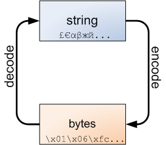

Arguably the most significant new feature of Python 3 is a much cleaner separation between text and binary data. Text is always Unicode and is represented by the str type, and binary data is represented by the bytes type. What makes the separation particularly clean is that str and bytes can't be mixed in Python 3 in any implicit way. You can't concatenate them, look for one inside another, and generally pass one to a function that expects the other. This is a good thing.
However, boundaries between strings and bytes are inevitable, and this is where the following diagram is always important to keep in mind:
Strings can be encoded to bytes, and bytes can be decoded back to strings.
>>> '€20'.encode('utf-8')
b'\xe2\x82\xac20'
>>> b'\xe2\x82\xac20'.decode('utf-8')
'€20'
Think of it this way: a string is an abstract representation of text. A string consists of characters, which are also abstract entities not tied to any particular binary representation. When manipulating strings, we're living in blissful ignorance. We can split and slice them, concatenate and search inside them. We don't care how they are represented internally and how many bytes it takes to hold each character in them. We only start caring about this when encoding strings into bytes (for example, in order to send them over a communication channel), or decoding strings from bytes (for the other direction).
The argument given to encode and decode is the encoding (or codec). The encoding is a way to represent abstract characters in binary data. There are many possible encodings. UTF-8, shown above, is one. Here's another:
>>> '€20'.encode('iso-8859-15')
b'\xa420'
>>> b'\xa420'.decode('iso-8859-15')
'€20'
The encoding is a crucial part of this translation process. Without the encoding, the bytes object b'\xa420' is just a bunch of bits. The encoding gives it meaning. Using a different encoding, this bunch of bits can have a different meaning:
>>> b'\xa420'.decode('windows-1255')
'₪20'
That's 80% of the money lost due to using the wrong encoding, so be careful ;-)